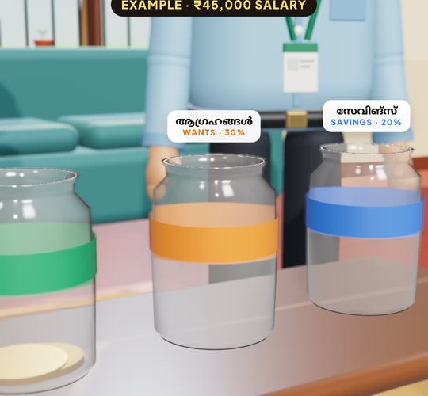
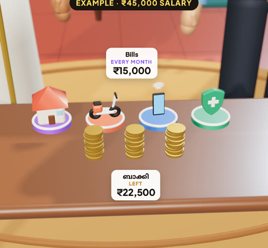
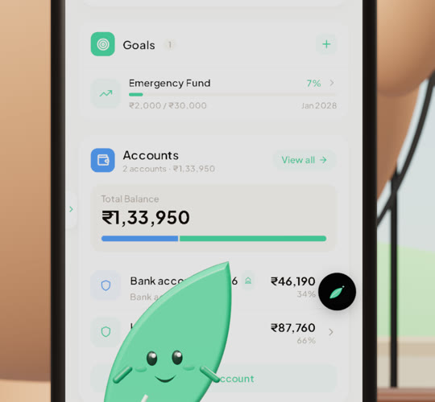
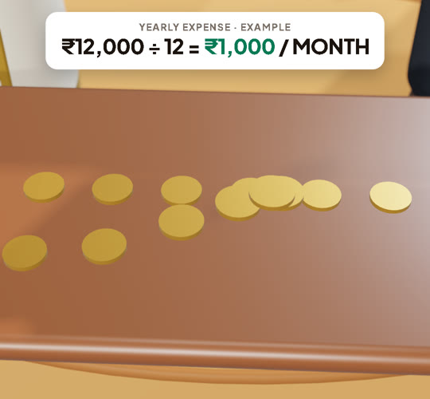
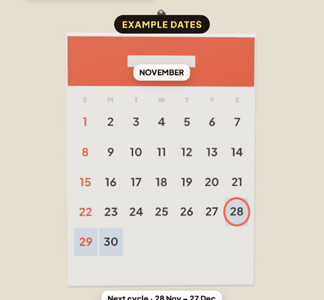
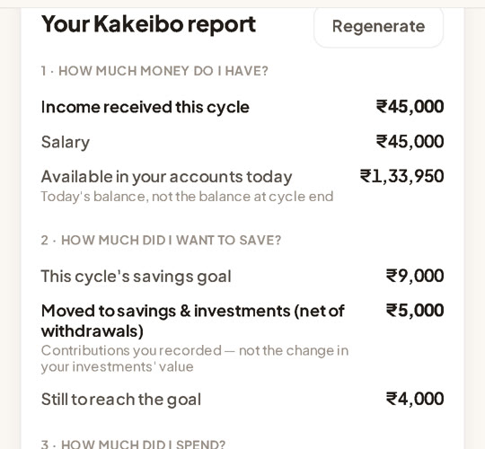

@moneyplant.online
S2 · EP 06
ഇത്തവണ Manu-വിന്റെ കണക്ക് ശരിയായോ?
EXAMPLE DATA
Needs · Wants · SavingsTHIS SALARY CYCLE
Kakeibo · cycle reviewPLANNED ₹9,000 · SAVED ₹5,000
Where it wentSHOPPING ₹9,700
One thing to do differentlyIN YOUR OWN WORDS
Next cycle’s goalREALISTIC · ₹6,000

EP01 · Needs, Wants, Savings

EP02 · Bills first

EP03 · Emergency Fund

EP04 · Yearly, month by month

EP05 · Month starts on payday

EP06 · Review every month
MANU & MAAMAN
SEASON 2 COMPLETE
YOUR SALARY. YOUR PLAN. YOUR PROGRESS.
Know Before You Spend.
Follow @moneyplant.online
Track your money with MoneyPlant · Example amounts